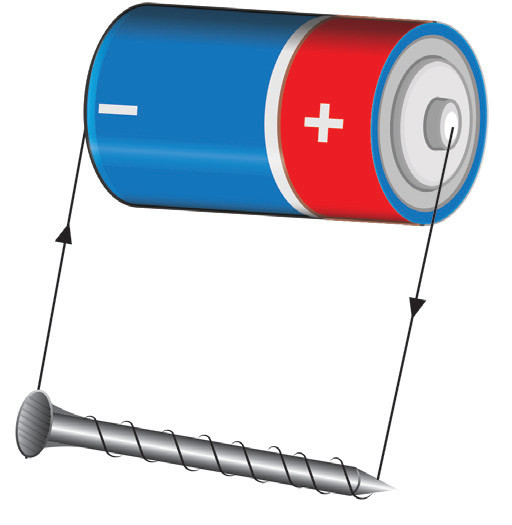
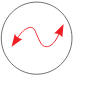
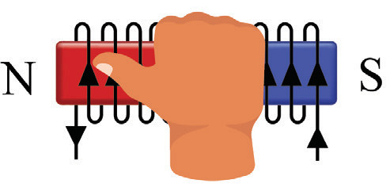

inserted in the solenoid, and a large current is passed through the wire.
The number of turns of the wire is also increased.
This is an industrial way of making a magnet.
The solenoid produces an electromagnet that acts like a bar magnet.

Polarity of a magnet can be determined by the direction of the current.
When looking at the nail, the end that has current flowing in a clockwise direction is the S pole.
If it flows anticlockwise, the end acts as the N pole.
See Figure 3.22 (a).
This is the rule for magnetic polarity.
Also, a right-hand grip rule can be used to indicate the polarity of the magnetised material.
The rule states that “if the fingers of the right hand grip the solenoid in the direction of the current, then the thumb points to the N pole of the solenoid” as shown in Figure 3.22 (b).

